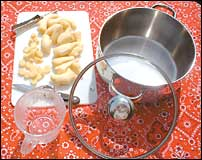
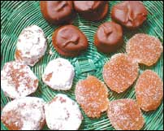
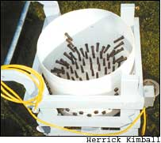

Candied ginger root has been a favorite treat around the world for centuries. Although somewhat time-consuming, it’s simple to make.
Fresh ginger root is available at most supermarkets. Look for firm roots. Traditionally, granulated white sugar is used to make candied ginger; but other possibilities include maple sugar, Sucanat (dried sugar cane juice), date sugar, raw sugar, corn syrup, maple syrup or honey.
For a small batch use:
1 tablespoon lemon juice
1½ cups of water or more if necessary
1 cup ginger peeled and sliced a quarter-inch thick
1 cup of granulated sugar or other sweetener
(optional: chocolate and extra sugar for coating)
Add 1 to 2 tablespoons of lemon juice per batch to help prevent crystallization of the syrup. Use at least enough water to cover the ginger, about 1½ times the amount of sugar. Put the water, sugar and lemon juice into a pan and bring to a boil, stirring until the sugar is dissolved. Add the sliced ginger and return to a boil. Lower the heat to a simmer and cover.
Raw ginger takes three to five hours to cook completely. If the syrup is cooking down too fast and doesn’t cover the ginger pieces, just add more water.uring the last hour or two of cooking, test the pieces for doneness. When thoroughly cooked, they should be tender and almost translucent. If the syrup isn’t thick enough (the consistency of honey or maple syrup) when the ginger is nearly done, remove the lid and let the syrup cook down. As it gets thicker, the syrup will bubble up, especially with the lid on, so be alert to avoid a mess on the stove. When the ginger is done, let the mixture cool for half an hour.
I generally “fish” the ginger pieces out of the syrup solution with a small fork or tongs, or you can strain them out. Save the ginger-flavored syrup in a glass jar with a tight lid for use on ice cream, pancakes, waffles, yogurt or to make ginger ale
Lay the ginger pieces on racks, screening or a cookie sheet covered with wax paper or nonstick foil. I find that using racks helps the ginger pieces dry faster and more evenly. Let the pieces dry overnight or longer
Put some sugar in a bowl, toss in the ginger a few pieces at a time and coat well. Put the coated pieces on a cookie sheet and let dry again for a few hours. If the pieces absorb too much coating and get sticky, just recoat them. Press two pieces together, if they do not stick to each other, they are ready to store in a covered glass jar. Another way to finish off candied ginger is to coat it in chocolate. I use bittersweet baking chocolate melted in a small double boiler. Keep the chocolate warm and work quickly.ip the pieces with a fork, tap off the excess and put the coated pieces on waxed paper or nonstick foil until they are hard enough to store in a covered glass jar. Candied ginger will last indefinitely at room temperature if stored in tightly closed containers.
Kathy Fisher
Roy, Washington
I have always assumed that chickens lay their eggs while sitting. One day when I was in the chicken coop, I thought one of my Rhode Island Reds was simply stretching and repositioning herself when she slowly stood up. I was surprised a few seconds later when an egg fell out and hit the bottom of the metal nest box with a sickening thud. After the chicken left, I checked the nest box, and sure enough, the egg was cracked. I hadn’t put enough pine shavings into the box, and by the time the hens had finished rearranging the shavings, the metal floor was showing through. Now I make sure I have enough bedding, 3 to 4 inches, in the nest boxes.
Robin Arnold
Port Clinton, Ohio
Twenty-seven years ago, I had a Dutch elm tree on our farm in Orange County, Ind. It was about 15 inches in diameter and stood about 100 feet from our house where we had a swing in its shade. One morning, a redheaded woodpecker took some dead bark off a limb, and I realized the tree was dying from Dutch elm disease. But I had an idea to save it. My father kept a can of pure gum turpentine and said it was good to put on an animal’s cuts and scratches to keep flies away.
I thought it might work on the elm tree.
I drilled a 1-inch-diameter hole into the tree about a half inch deep and screwed an 18-inch, L-shaped pipe into the hole. (To make the L, use a 1-inch-diameter pipe 2 inches long, threaded at both ends, an elbow and an 18-inch, 1-inch-diameter pipe.) I poured about a cup of turpentine into the pipe and put a cork into the end. A week later, I checked the pipe and all the turpentine had drained into the tree. I unscrewed the pipe and put a cork into the hole and covered that with turpentine.
We moved a few years later, but recently I returned with my son-in-law to visit the farm. And there was the tree, 3 feet in diameter and about 75 feet tall, healthy as can be! I guess my dad was right about turpentine keeping insects away.
Be sure the pipe fits tightly into the hole so no turpentine leaks out and always use pure gum turpentine. If the tree starts to die again, give it another dose
Johnnie Williams
New Albany, Indiana
I worked as a rural mail carrier in Florida for many years. I often dreaded what I might find each time I opened the mailbox - wasps, spiders, scorpions and frogs were the most common occupants. One of my customers kept a small glass jar of mothballs in her mailbox, with small holes in the lid so the fumes could escape. There were never any insects or other creatures in her mailbox.
Now I live in Kentucky and have a small well house where various spiders and a copperhead snake had taken up residence. I remembered the mothballs! So, early each spring, I renew my mothballs in the glass jar, and there are no pump-house occupants at all.
Marcella White
Edmonton, Kentucky
Here’s a technique to hurry along your spring rhubarb. In late winter, work some well-rotted manure into the soil around the clumps and cover them with a barrel or basket, 2 or 3 feet tall, with the bottom removed. Pack soil and fresh manure around the outside of the barrel to encourage warmth, and to produce succulent stalks weeks in advance of the normal season.
You will enjoy treats from this ancient plant with extra-early servings of its savory sauce in pies and tarts. Old-timers say that nature gives us the rhubarb harvest in spring to benefit our bodies after the harsh winter months
Doris Stebbins
Danville, Vermont
To get rid of mice: About once a month, I mix a half gallon of apple cider vinegar with 2 gallons of water and sprinkle it around the outside of the house. We haven’t seen mice in a long time!
Milton Ammel
Parker, Kansas
Every year when I hatch my chicks, I start them on regular feed, and also give them a little bit of weed greenery. When they are old enough to be out in the yard, they have developed a taste for those weeds and devour them
Rhianon Gill
Winona, Minnesota
My affair with the Whizbang plucker started a year ago when I was browsing an Internet poultry discussion group where someone mentioned a plan for a mechanical chicken plucker. I saw a video of an old rooster being plucked and was sold on the Whizbang. I ordered the book Anyone Can Build a Tub-style Mechanical Chicken Plucker by Herrick Kimball, and soon my new plucker was ready for a spin.
The Whizbang plucker is basically a tub with rubber fingers. When the base starts rotating, the fingers tumble the birds around and quickly pick the feathers from the bird. A well-scalded bird can be plucked in 20 to 30 seconds. For even more efficiency, it can pluck four birds at a time. With the help of the Whizbang, the not-so-glorious job of plucking broilers can become a minor, painless step in poultry processing
Since I have only kept poultry for four years, I am not as skilled at plucking by hand as some of the old-timers. But for the $300 that it cost me to build the machine, I can now keep up with the best of them. I even have time to help with cleaning the birds after they have been defeathered
After plucking almost 100 chickens, turkeys and ducks in the Whizbang, I consider that this machine has paid for itself. It saves me time, labor and aggravation, and in return it provides me with a well-plucked bird, in a fraction of the time
I am very satisfied with my machine, and, should you choose to build one, I am convinced you will be, too.
Aram Frangulyan
Kent, Washington
Plans for building the Whizbang chicken plucker are included in the book, Anyone Can Build a Tub-style Mechanical Chicken Plucker. - Mother
|
 |
 |
 |